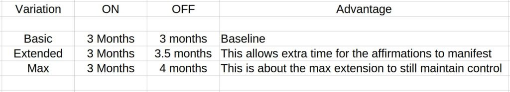
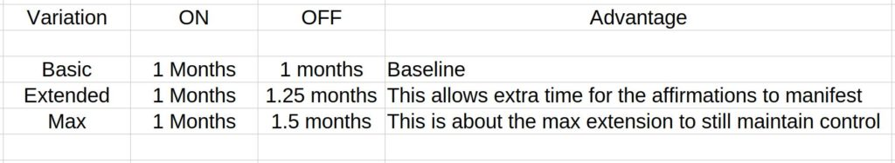
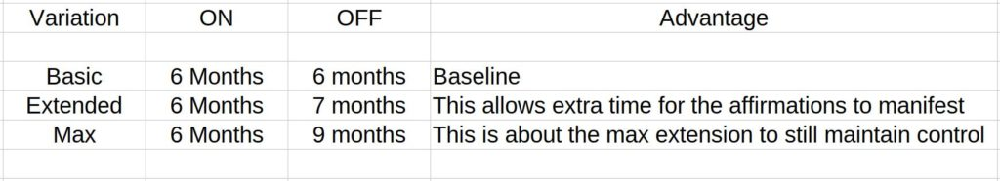

This article helps you decide how long to conduct the affirmation campaign and how long to conduct the “dwell” or wait-period afterward. In previous articles I have greatly simplified the procedure. I offered a simple “rule of thumb”. Which was one week of no-affirmations for every week where you conduct a prayer affirmation campaign. This article will get more involved in the process and allow the user a greater degree of latitude in the campaign arrangement.
I am commenting NOW, simply because I am launching a brand new, multi-month Affirmation Campaign based upon my Fate Forecast for this year.
MM Comments
I am starting my new campaign in a few days. For the most of the last eighteen months, I have been running a 1 month on/off cycle. This was due to the Bazi that hit me about three years ago and resulted in some significant changes and issues. I had to make adjustments to my campaigns for my personal conditions, and the crazed insanity influence that the USA has had on where I live, my lifestyle, and my industry. I have managed to keep things under control.
Contemporaneously, in the Bazi it is believed that a person is surrounded by a non-physical reality. Within this non-physical are cyclic events and attributes that ebb and flow depending on a host of causes and effects. This non-physical reality differs from person to person. However, it consists of things that ebb and flow according to synchronized events that are triggered upon birth. The Chinese have given these various components and their behaviors all sorts of names. They have created a series of "animal characteristics" such as dog, pig, and snake to describe a set of initial non-physical conditions. They have also created a series of names to describe how the non-physical components behave as a group. They go by such names as a "strong earth", or a "weak wood". It's easy for the ignorant to make fun of this entire system. To them, it sounds a lot like a more detailed version of Western astrology.
Now, that my “Bazi stars” are opening up back again, and becoming favorable, I can refocus on some postponed goals in my new campaign. So I am switching back to a 3 month on/off campaign cycle with an extended dwell time afterwards to maximize the effect. I will have more articles on the Bazi because it ties together very nicely with the MWI, prayer affirmation campaigns, and world-line travel.
While uncomfortable, I am leaving this Bazi time of change into a new state of being. And so far it appears to be far superior in many ways. Of course there are obvious changes…
- Phone is HarmonyOS instead of Android.
- Computer is Linux Mint instead of Microsoft Windows 10.
- Payments in QR code instead of paper cash money.
- Food is healthy / vegetarian instead of average fast fare.
- Blood Pressure is 130/85 instead of 180/95.
- Daughter is walking/talking/eating instead of crying/shitting/feeding.
And so on and so forth. Change is always uncomfortable, but once you get through it, you reach a plateau on the side of a mountain. And you can enjoy the view and rest a while and chill out before the next ascent upwards.
First things first
When you get to the stage of arranging your next affirmation prayer campaign, you need to layout, plan and structure the campaign. This means…
- A review of your previous campaign(s).
- What worked, what still needs to work, and changes to them.
- What didn’t work, and corrective actions.
- New things, and elements to add to the campaign.
- The structure arrangement of this next campaign (this article)
- Those particular goals that you want to stress and emphasize.
- Where and how you will read and vocalize your campaign.
- A total review of your fate during the periods of active and dwell affirmations. This is called Fate Forecasting.
I just cannot emphasize how important this first basic step is. Some things might stay the same, but others might change drastically. Please take the time to plan, revise and implement properly. Now to the arrangements…
Fate Forecasting
Most people do not need to have a full BaZi reading for them. I have found it to be extremely useful. Instead, you can go the “easy” route and locate the year that you were born in… that will determine what animal sign you are.
Here’s a guide…
Then go on the internet and find out what the GENERAL Fate Forecast is for the months ahead for your “animal” association.
For instance…
- Chinese monkey sign in 2023
- Dog astrology in Chinese years 2022
Then you will see a general forecast for your sign. They tend to be pretty accurate on trending fate.
But if you want to put down some money, you can have a precise fate reading. The most accurate, and specific. readings are found when you conduct your own exact BaZi reading. I wrote about that HERE. Here, you can see your exact animal year, exact time, and exact general geographical coordinates at your place of birth.
Once you know what your fate has in store for you, you can move forward with what your affirmation campaign will look like. In my personal case now, I have a strong positive fate trend all year, so I am going to conduct a long solid campaign 3 on / 4 off. But the last few years has been not that great. So I have been conducting a 1 / 1 campaign.
The most basic arrangement
Three months on/off. This is the most basic arrangement. You conduct your affirmation campaign for three months. You start on it, and then you finish it after three months. Then you wait for three months so that the goals can simmer and manifest. This is the baseline campaign structure, and it is what I strongly recommend to all newcomers to this technique. Now, that being said, there are some variations to this arrangement…
.

Quick cycling technique
One month on/off I’ve utilized the quick cycling technique during difficult and contentious times where I needed to have strong affirmations to navigate through troubles, but still be able to adjust to changes and make course corrections on the MWI. This is a useful technique, but it is not desirable to maintain it for long periods of time. I suggest you only follow this technique for short periods of time. Certainly no longer than eight months in total. There are some slight variations that are worthy of consideration…
.

Heavy lifting / Serious change crowbar
Six months on/off Let’s suppose there is something that you really desire, or really want to get moving on. This technique is guaranteed to “put enough wind in your sails” so that your affirmation realization can “pick up her skirts and trot”. Things will happen, though they will not necessarily happen quickly. This will make things happen and are just great for long term desires. Some variations…
.

Basic Maintenance technique
One week on/off In general I do not recommend this variation technique. But it does have it’s uses. What it tends to allow is a basic level of control on the MWI. It’s not really all that good for new goals or objectives. But it will make sure that you are still following your plan and your vector path towards your ultimate results. There are no variations to this technique.
Dragon Loop
This is a creative method of manifesting intention, but it is rather advanced. You conduct the three month on/off affirmation campaign schedule, and then follow up with a one month on/off schedule. The second shorter period is for course corrections, and feed back purposes. Then you go back to the three month on/off sequence with the corrections in play.
Some final thoughts
This is a really short and abbreviated article. But I hope that it helps you in some way.
In always, the longer the duration of the active affirmation campaign phase, the more powerful the implementation will be.
I hope that your dreams, wishes and desires all come true. Because, you know what? You deserve them. You really, really do.
Be good and do great things. And never forget… To be the Rufus. Video 7.7MB